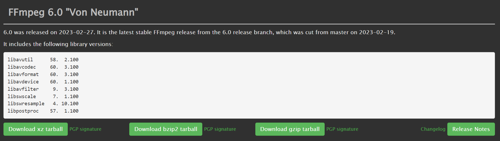
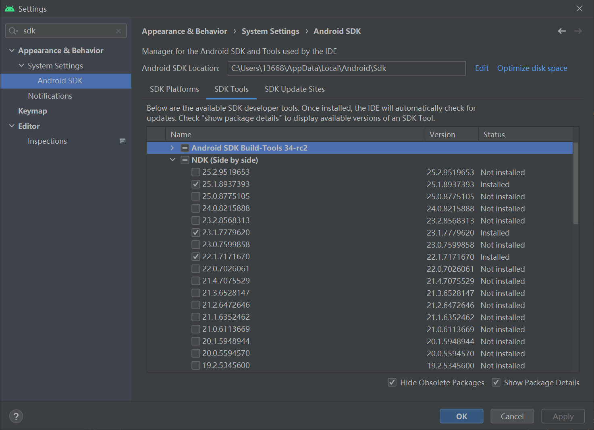
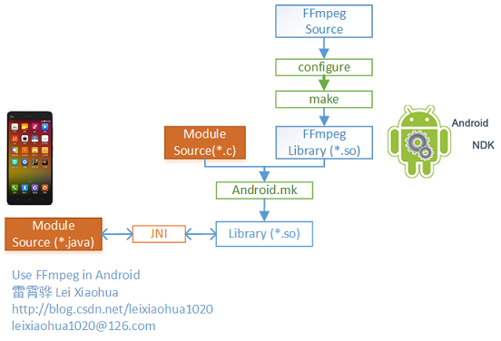
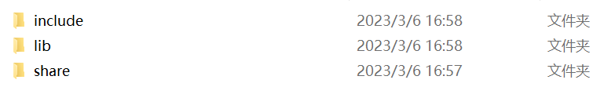
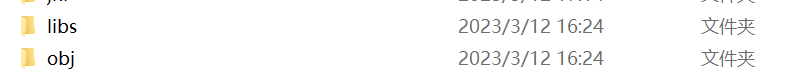
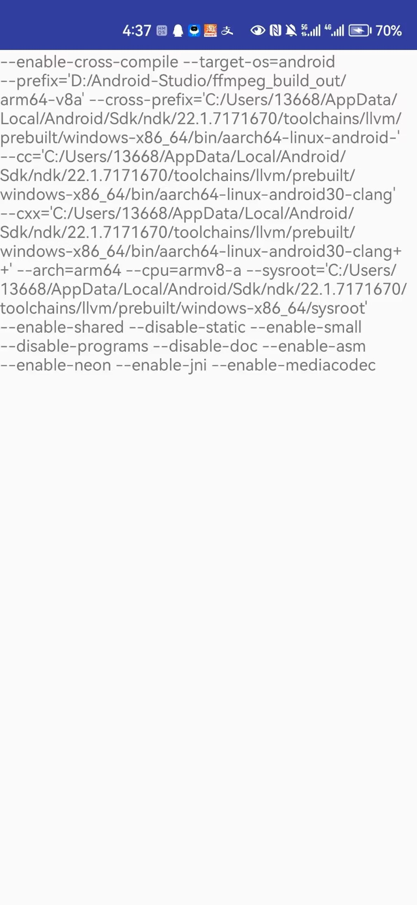

Android平台JNI开发保姆级教程
最近项目中在Android移动端需要用到音视频处理的部分，这离不开FFmpeg工具。但是FFmpeg源码是C语言，想要在Android java中调用FFmpeg工具，这就需要Android NDK登场了。
Android平台JNI开发保姆级教程
前提条件
FFmpeg源码：可以在官网下载，目前我是用的是最新版的6.0版本（只下载源代码即可，不要下载已经编译好的在不同平台可以运行的安装包）。

Android NDK：可以在官网下载，但更推荐在Android Studio中的Setting中可以直接下载NDK对应版本，我这里使用的是22.1.7171670版本的NDK（建议不要使用太新的NDK，否则可能会出现一些BUG）。
 安装msys2：由于我是在Windows下对FFmpeg源码进行交叉编译，所以需要一个类Unix环境；或者你可以直接使用linux操作系统。
由于第一次接触Android开发，对Android程序调用类库的流程不清楚，导致走了很多弯路。其实总结下来也很简单，我这里引用了雷神的流程图：

在FFmpeg的最新版本6.0中，已经不需要在源码中修改configure设置了（我记得貌似从4.0版本之后就不需要修改了，记不太清了）。
背景知识
Android NDK
NDK 主要提供了一些库和工具，包括交叉编译器、调试器、库文件等，开发者可以使用这些工具将原生代码编译为针对不同 CPU 架构的本地库，然后在 Android 应用中通过 Java Native Interface（JNI）来调用这些本地库，以实现一些高性能、低级别的操作，例如图形处理、音频处理、加密、数据处理等。
Android NDK 是一个允许使用 C、C++ 等本地语言编写 Android 应用的工具包，可以提高应用的运行效率和系统性能。
JNI
JNI（Java Native Interface）是Java平台提供的一种机制，用于在Java虚拟机中运行本地代码。它允许Java应用程序通过调用本地语言编写的函数来使用底层操作系统和硬件资源，从而实现高性能的计算和底层操作。简单来说，JNI提供了一种在Java程序中调用本地代码的方式，可以扩展Java程序的功能和性能。
.so库
在Android中，C语言代码需要被编译为.so库的形式才能被Android应用程序调用。这是因为Android系统是基于Linux内核的，而Linux系统下的.so库是一种常见的代码共享形式，可以被多个进程动态链接使用，避免了代码的重复编写和内存占用。通过将C语言代码编译为.so库的形式，Android应用程序可以在运行时动态加载和链接所需的库，从而实现对底层系统和硬件资源的访问和控制。
通过.so库的形式调用C语言代码，可以让Android应用程序更高效地使用底层系统和硬件资源，从而提高程序的性能和可靠性。同时，.so库也方便了代码的管理和维护，可以将公共的代码打包成库，供多个应用程序共享使用。
开发流程（敲黑板！）
编译FFmpeg库
首先要把NDK安装好，路径是在你SDK路径下的NDK目录中，最好把你要用到的版本加入到环境变量当中。
在任意目录中新建一个脚本build_ffmpeg.sh，添加内容：
1 |
|
前面几行要根据自己的电脑路径进行配置，切莫照搬全抄！这里的API的版本是最低版本，注意不要大于自己设备的Android API版本。网上有很多类似的配置脚本，可以对configure响应的修改进行功能增减。
我这里只编译了arm64-v8a的.so库，通常来说64位的CPU架构是对先前的CPU架构是兼容的。
将脚本保存后关闭，然后打开安装好的msys2，在脚本目录下运行脚本：
1 | ./build_ffmpeg.sh |
整个编译过程大概有二十多分钟吧，编译好后的动态库会生成在你前面设置的DST_DIR路径下。

include目录下是一些头文件，lib目录下就是相应的.so库了。
JNI调用C程序
使用JNI调用C语言代码需要做以下几步：
- 编写带有native方法的Java类和声明要加载的类库
- 使用javah命令生成.h头文件（也可以用JNI_OnLoad动态注册函数，就不用生成.h头文件了）
- 编写C代码实现头文件中的方法
编写Java端代码
用官方文档中的hello_jni例程修改的。
1 | package com.example.hellojni; |
编写C端代码
1、获取C语言的接口函数声明
根据Java对于C语言接口的定义，生成相应的接口函数声明。说通俗点就是Java层只是用native关键词声明了一个C语言的函数，要在Java层的函数和C语言层的函数之间形成一个映射关系，这一步需要用到JDK中的“javac -h”命令。
尴尬的是在生成头文件的时候出现了程序包XX.XX不存在的BUG，网上找了一会发现并没有卵用，于是乎就直接定义JNI_Onload方法形成动态函数映射。（跳过第一步生成.h头文件的步骤即可）
下面的第三步就讲讲如何用JNI_Onload：
传统java JNI方式： 编写带有native方法的Java类 → 使用javah命令生成.h头文件 → 编写代码实现头文件中的方法
但是上述每次都需要通过javah依据java类的全类名生成对应的native函数全名称，其实我们可以使用RegisterNatives方法把c/c++中的方法隐射到Java中的native方法，这样就可以随意定义你的函数名而不用写那么长的又看不懂的全名类啦！
2、编写C语言代码
在项目根目录下创建jni目录：jni目录中新建hellojni.c文件，代码如下：
1 |
|
3、定义函数JNI_OnLoad动态注册函数
1 | jint JNI_OnLoad(JavaVM* pVm, void* reserved) { |
前后都是固定的模板，不需要修改，只需要更改JNINativeMethod中的字段信息，关于JNI编程的简单语法都很简单，去了解一下就可，不在这里说了。其实就是用这个RegisterNatives注册方法，C语言本地的函数与Java层的类和函数进行动态绑定。
JNINativeMethod结构体的字段信息：
1 | typedef struct { |
3、Android.mk和 Application.mk编写
在JNI目录下创建Android.mk和 Application.mk文件。这是NDK官方推荐的ndk-build（是一个命令行工具，它用于构建使用C/C++编写的Android Native库）构建方式的脚本文件（不过yysy现在用的更多的是cmake了，反正ndk-build很好用，管他的呢）。
Android.mk的编写规范可以看NDK的官方文档，Android.mk添加如下代码：
1 | LOCAL_PATH := $(call my-dir) |
Application.mk代码如下：
1 | APP_ABI := arm64-v8a |
APP_ABI 指定了设备CPU的架构。因为前面编译FFmpeg的时候我只编译了64位版本的，这里就对应上。
4、NDK-BUILD编译
将先前编译的FFmpeg的include和lib目录复制到jni目录当中来，现在看jni目录结构应该是这样的：
命令行cd到这一层目录下，执行ndk-build命令即可。
然后你还会发现项目的根目录下生成了这两个目录。

libs里面就是根据android.mk脚本编译的.so库了，obj没什么用，里面就是一些编译的过程文件。将libs目录中的内容（应该是cpu架构文件夹，下层目录才是.so库）copy到app/src/main目录的jniLibs目录当中（项目运行时默认就是在jniLibs中寻找加载相应的第三方.so库）。

接下来就可以在手机上对项目进行测试啦！因为我使用的是arm64-v8acpu架构，这种架构好像不支持在虚拟机上测试（虚拟机架构是x86和x86_64，但可不可以我也没试过）。
下面是测试的结果啦：
